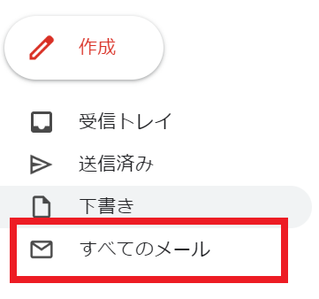
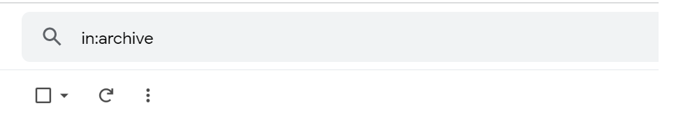
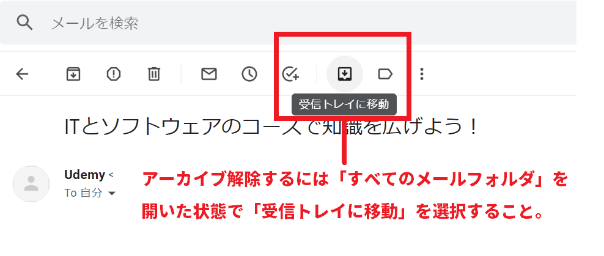

記事編集：8月5日
Gmailを操作している時に、ふと気になってしまうアーカイブ機能。スマホでGmailを使っているときに、無意識にメールをスワイプしてしまって 「アーカイブされました」と意に反してアーカイブしてしまっている方も多いと思います。
この謎の機能とも言える「アーカイブ」について基本的な説明や、誤ってアーカイブした時の操作方法について説明をしたいと思います。
まず説明をすると、アーカイブとは受信トレイから非表示状態になることを意味します。 アーカイブは重要性のないメールを受信トレイから整理する機能となっています。
アーカイブされたメールは受信トレイから消えますが「すべてのメール」フォルダにはデータは残ったままになります。 そのため間違ってアーカイブしてしまった時には、まず「すべてのメール」から探すことになります。
「すべてのメール」に残っているアーカイブされたメールは操作によって受信トレイに戻すことが出来ます。
戻し方はスマホとパソコンで異なりますが、パソコンであればメールを開いてから上段にある「受信トレイに戻す」のアイコンを選択することで戻せます。 戻し方については後半で操作方法を説明しています。
アーカイブされたメールに追加連絡や返信など、なんらしかのアクションがあった場合は自動的に受信トレイに戻ります。
ではアーカイブを探したい、アーカイブを戻したい時の操作について説明をします。

間違ってメールをアーカイブしてしまった場合などに起こりうるのが「メールを戻したいがどこにあるのかわからない」問題になります。
アーカイブしたメールは「すべてのメール」フォルダには残っていますので、 メールを探したい場合は「すべてのメール」フォルダから探しましょう。
しかし、「すべてのメール」フォルダには受信されるほとんどのメールが入っています。 そのため、アーカイブされたメールを探すにが困難なケースも出てきます。
メールの内容をある程度おぼえているのであれば、「すべてのメール」からさらにキーワード検索をかけてメールを調べると 比較的探しやすいでしょう。

キーワード検索でどのようなキーワードを入れていいか判断がつかないときでも、効率的に探す方法がもう1つあります。 Gmailのメール検索欄に「in:archive」と入れることで、アーカイブされたメールをピックアップすることが出来ます。
ただし、このコマンドでは純粋にアーカイブされたメールだけをピックアップしてくれるわけではありません。 「ラベル振分け」設定をしていて受信トレイを飛ばしてラベルに入っているメールも一緒に表示されてしまいます。
それでも「すべてのメール」から限定されたメールを抽出することが出来るので、普通に探すよりも効率的に アーカイブされたメールを探すことが出来るでしょう。
実際にアーカイブされたメールの解除方法を説明します。アーカイブ解除することで受信トレイでも表示されることになります。
パソコン版の場合
メールを探し出しアーカイブ機能を解除するには、PC版の場合は該当のメールを開いて「受信トレイに戻す」ボタンを選択することで解除ができます。

スマホ版の場合
スマートフォン版のほうでも同様に、アーカイブされたメールを開いて画面右上にある設定（3つ点）をタップ、さらに「受信トレイに戻す」をタップすることで解除が可能になっています。
Gmailのスマホ版のアプリでは、メールをスワイプしたときにアーカイブされるように初期設定がされています。
そのため意図しないスワイプしたときに、そのままメールがアーカイブされてしまうことがあります。
筆者もこれまでにスマホでGmailをしている時に、スワイプしてしまってアーカイブするつもりのないメールをアーカイブさせてしまったことが何回かあります。
ちなみに設定を変更することが出来ますので、スワイプでアーカイブされるのが嫌な方は設定を変えておきましょう。

demiglaze
Web制作を始めて約19年になります（HTML/css、Photoshop、Webマーケティング）。2005年から当サイトの運営を開始。 これまでに300個以上のドメインを取得、10社を超えるレンタルサーバーを利用してきました。